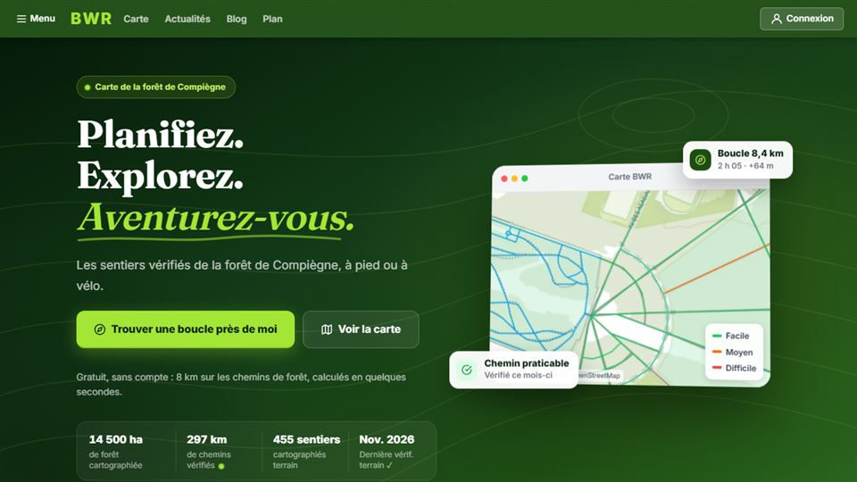
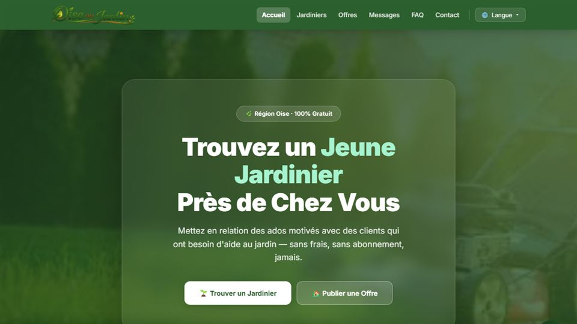
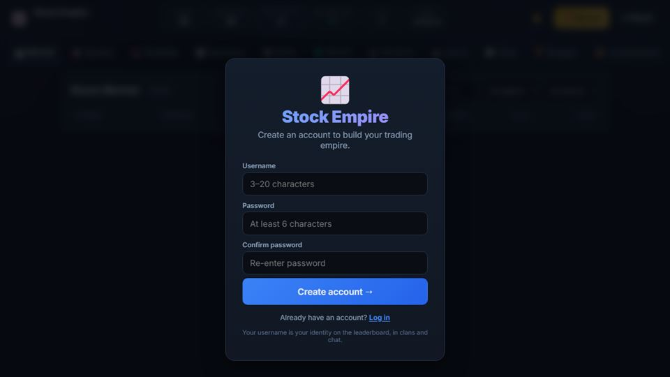
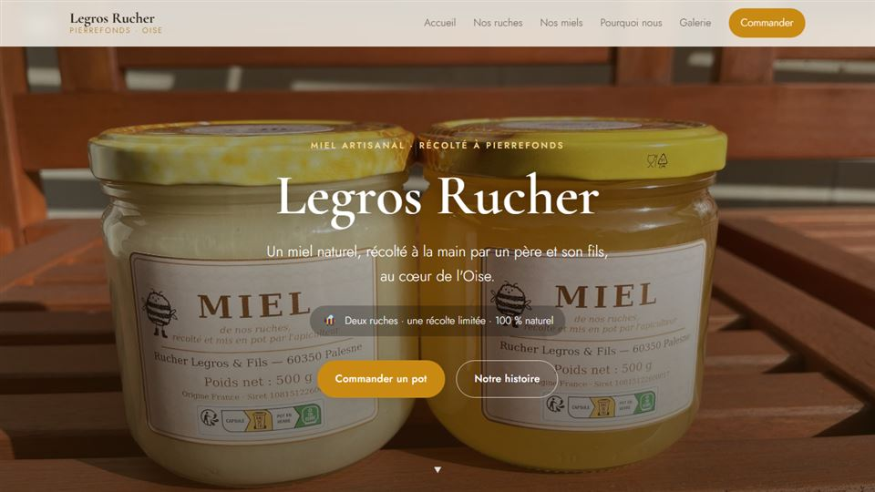
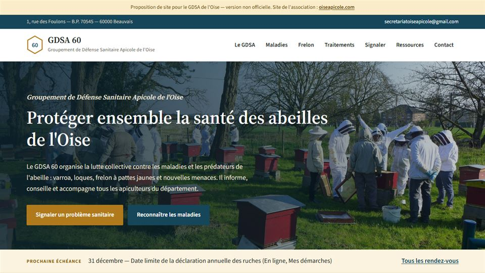

Hi, I'm Thomas.Salut, moi c'est Thomas.
I make websites and small web apps, mostly for people and associations around Compiègne, in the Oise. A forest map, a site for a honey producer, a game, a way to find someone to mow your lawn…
Je fais des sites web et des petites applis, surtout pour des gens et des associations autour de Compiègne, dans l'Oise. Une carte de la forêt, le site d'un producteur de miel, un jeu, un moyen de trouver quelqu'un pour tondre sa pelouse…
If you need a website or want to redo an old one, send me a message.
Si vous avez besoin d'un site ou si vous voulez refaire l'ancien, écrivez-moi.
What I've madeCe que j'ai fait

A map of the Compiègne forest for walkers and cyclists. You choose a distance and it finds you a loop on the forest paths. Around 300 km of paths have been checked so far, and you can report a fallen tree or a flooded path. It also works offline once it's loaded.
Une carte de la forêt de Compiègne pour les marcheurs et les cyclistes. Vous choisissez une distance et elle vous trouve une boucle sur les chemins. Environ 300 km de chemins ont déjà été vérifiés, et on peut signaler un arbre tombé ou un chemin inondé. Elle marche aussi hors connexion une fois chargée.
Leaflet, OpenStreetMap, Cloudflare Workers, PWA

A free site that puts teenagers who want to earn some money doing garden work in touch with people nearby who need a hand. You can post a job, browse gardeners and message each other. No fees, no subscription.
Un site gratuit qui met en relation des ados qui veulent gagner un peu d'argent en jardinant avec des gens du coin qui ont besoin d'un coup de main. On peut publier une offre, voir les jardiniers et s'envoyer des messages. Pas de frais, pas d'abonnement.
Accounts, messaging, Cloudflare WorkersComptes, messagerie, Cloudflare Workers

A stock market game you play in the browser. You start with $10,000, buy and sell shares, buy businesses, join a clan and try to climb the leaderboard against the other players.
Un jeu de bourse qui se joue dans le navigateur. On commence avec 10 000 $, on achète et vend des actions, on rachète des entreprises, on rejoint un clan et on essaie de monter au classement face aux autres joueurs.
Multiplayer, leaderboards, Cloudflare WorkersMultijoueur, classements, Cloudflare Workers

The website of a small honey producer in Pierrefonds: two hives, a father and his son. It shows the honeys, tells the story of the hives and explains how to order a jar.
Le site d'un petit producteur de miel à Pierrefonds : deux ruches, un père et son fils. On y trouve les miels, l'histoire des ruches et comment commander un pot.
Static site, local search (Google)Site statique, référencement local (Google)

A new website I proposed to the GDSA 60, the association that looks after bee health in the Oise. It isn't their official site, it's my idea of what it could look like: bee diseases, the Asian hornet, treatments and a page to report a problem.
Une proposition de nouveau site pour le GDSA 60, l'association qui s'occupe de la santé des abeilles dans l'Oise. Ce n'est pas leur site officiel, c'est mon idée de ce qu'il pourrait être : maladies des abeilles, frelon asiatique, traitements et une page pour signaler un problème.
Static site, several pages, GitHub PagesSite statique, plusieurs pages, GitHub Pages
About meÀ propos
What I like most is making things that are actually useful to people around me. I'm still learning, and every project teaches me something new.
Ce que je préfère, c'est faire des choses qui servent vraiment aux gens autour de moi. J'apprends encore, et chaque projet m'apprend quelque chose de nouveau.
I mostly use plain HTML, CSS and JavaScript, Leaflet for maps, and I put my sites online with Cloudflare Workers or GitHub Pages.
J'utilise surtout du HTML, du CSS et du JavaScript, Leaflet pour les cartes, et je mets mes sites en ligne avec Cloudflare Workers ou GitHub Pages.